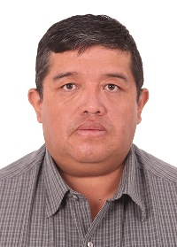
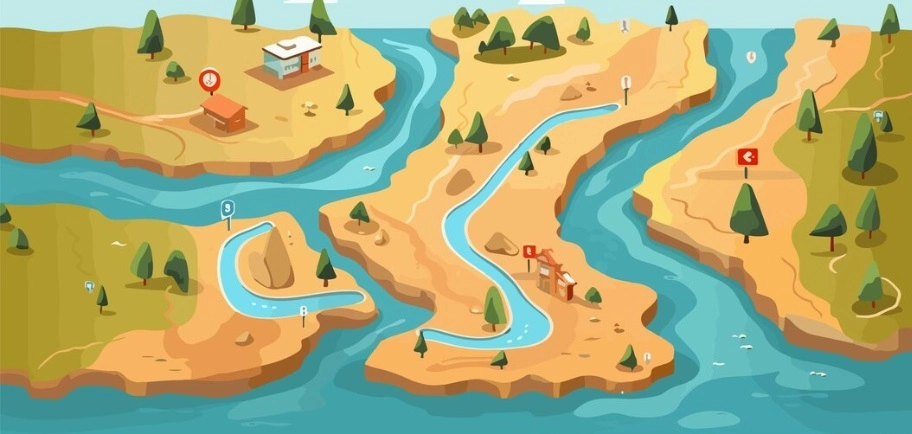

Teran Whitewater Rafting Company
Overview
Teran Whitewater Rafting Company is your gateway to thrilling adventures on Bolivia's most stunning rivers. We offer guided tours that blend excitement, safety, and scenic beauty, ensuring an unforgettable experience for all.
Meet the Owners and Staff

Founded by Giancarlo Teran Olguin in 2010, the company is driven by a passion for adventure and nature. Giancarlo leads a dedicated team of rafting experts, safety professionals, and local river enthusiasts who ensure every trip is both safe and enjoyable.
Our guides are certified professionals with years of experience navigating Bolivia's rivers. From the Rocha River to the Espiritu Santo, our team knows every bend and rapid, making your adventure unforgettable.
Basic Trip Summary

Each trip is tailored to provide the best adventure experience. Whether you're a beginner looking for a scenic float or a seasoned thrill-seeker ready to tackle Class IV rapids, we have something for everyone:
- Beginner Trips: Calm waters and scenic views, perfect for families.
- Intermediate Trips: A mix of gentle rapids and excitement for those ready to level up.
- Advanced Trips: High-adrenaline adventures through challenging rapids.
Join us to create memories that will last a lifetime!